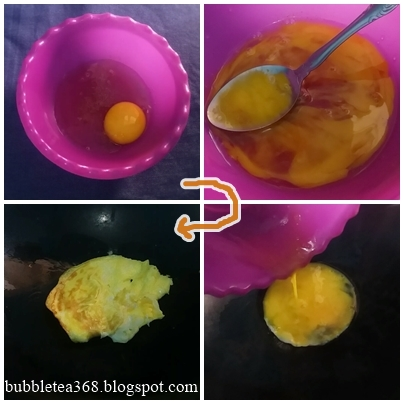
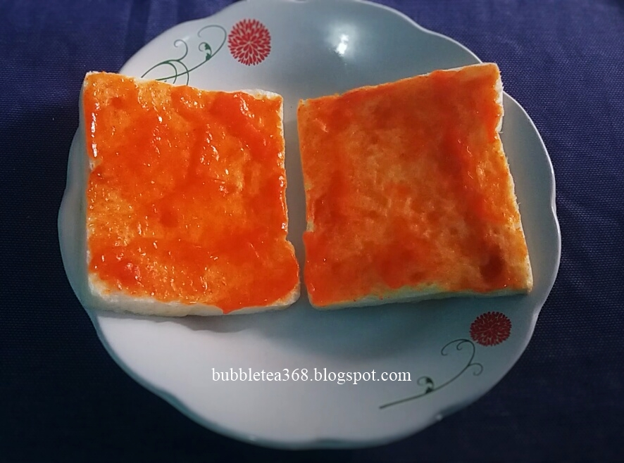
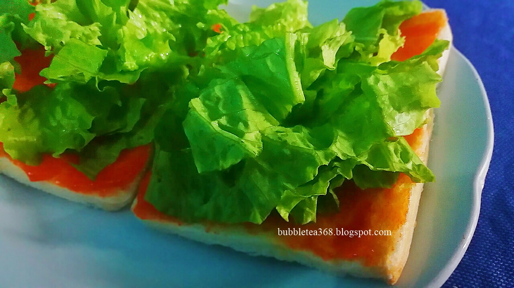
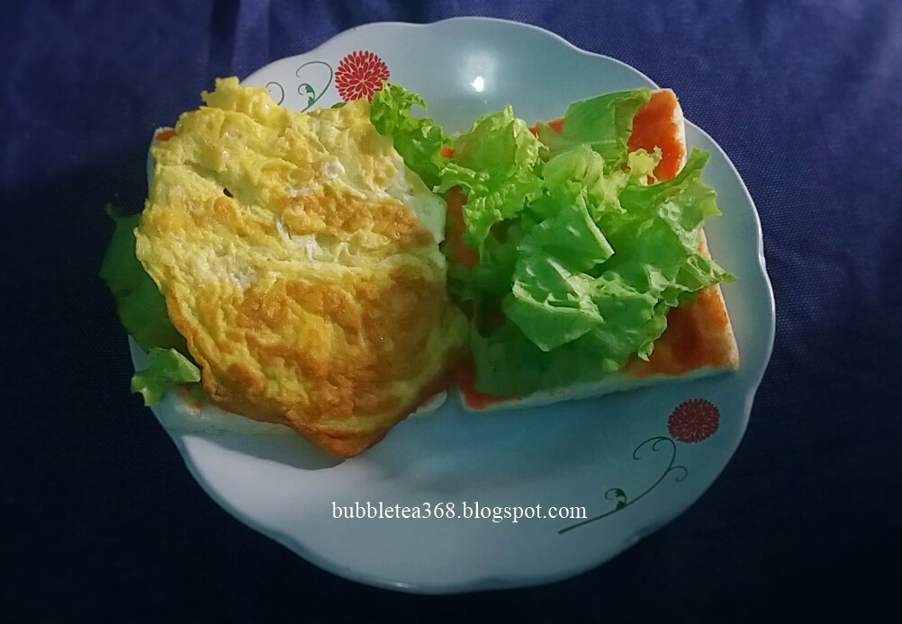
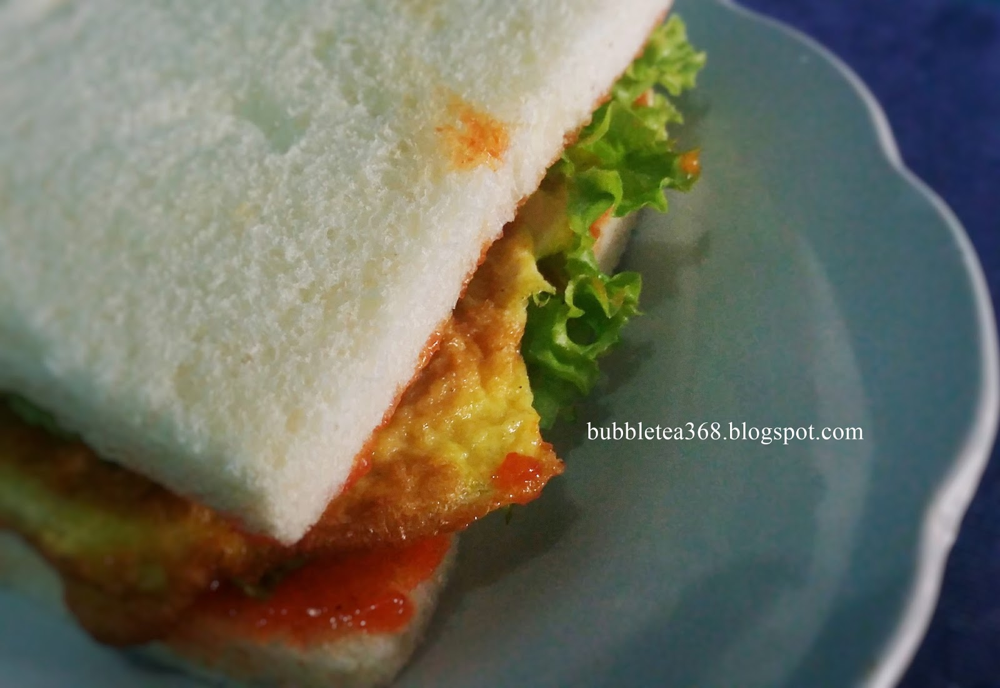

Resep Sandwich

Bahan-bahan:
- Roti tawar
- Saus
- Telur
- Daun selada
- Minyak
Langkah-langkah
- Buat telur dadarnya

- Olesi roti dengan saus dimasing-masing satu sisi roti

- Tambahkan selada diatas roti yang telah dioles saus

- Letakkan telur dadar yang telah digoreng diatas selada

- Lalu tumpuk jadi satu
